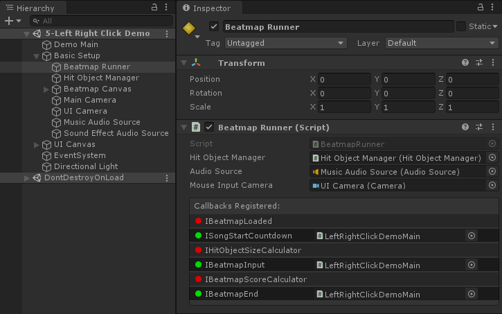

Customizing Input
By default, MouseDance just checks for left-click or Z on the keyboard. If you want to change it, the proper way to do this is to implement IBeatmapInput:
using System.Collections.Generic;
using MouseDance.Runtime;
using UnityEngine;
public class BasicUsage : UnityEngine.MonoBehaviour, Callbacks.IBeatmapInput
{
public BeatmapRunner _beatmapRunner;
public UnityEngine.TextAsset _osuFile;
public UnityEngine.AudioClip _song;
public bool _relax;
void Start()
{
_beatmapRunner.SetInput(this);
_beatmapRunner.LoadAndStart(_osuFile, _song);
}
public bool IsPlayerInputDown
{
get
{
// Relax considers the user to be always pressing the button.
if (_relax) return true;
return Input.GetMouseButtonDown(0) || Input.GetKeyDown(KeyCode.Z);
}
}
public bool IsPlayerInputUp
{
get
{
if (_relax) return false;
return Input.GetMouseButtonUp(0) || Input.GetKeyUp(KeyCode.Z);
}
}
public Vector2 CursorPosition => Input.mousePosition;
}
Note that BeatmapRunner.SetInput is called before starting the beatmap.
Warning
If your custom controls don't seem to be getting used, check if you've properly called BeatmapRunner.SetInput.
For every BeatmapRunner, there can be at most only one active IBeatmapInput in use.
BeatmapRunner in the Inspector will show you which callbacks have been registered. The one labeled IBeatmapInput should be green once the game is running.
The name of the registered callback's concrete type will be displayed (namespace and class name). If it is a MonoBehaviour type, it'll show the actual file instead. You can click on that to ping it in the Project tab.

This GUI is only for debugging. It is not designed or intended to register callbacks from the GUI.